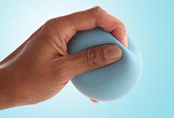

Pinch Strengthener

This exercise helps strengthen the muscles of your fingers and thumb.
It can help you turn keys, open food packages, and use the gas pump more easily.
• Pinch a soft foam ball or some putty between the tips of your fingers and your thumb.
• Hold for 30 to 60 seconds.
• Repeat 10 to 15 times on both hands. Do this exercise two to three times a week, but rest your hands for 48 hours in between sessions. Don't do this exercise if your thumb joint is damaged.